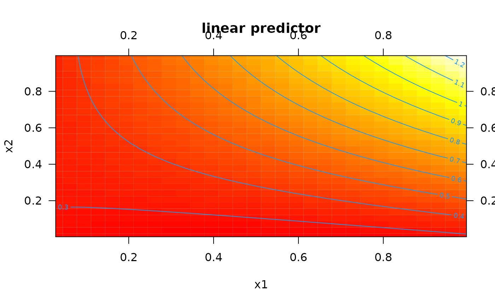
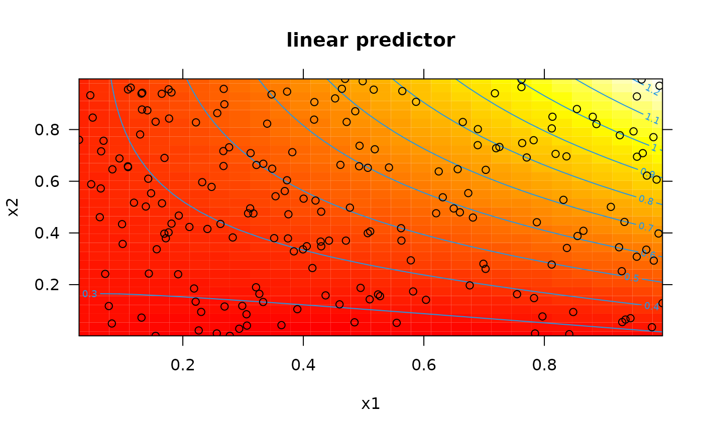
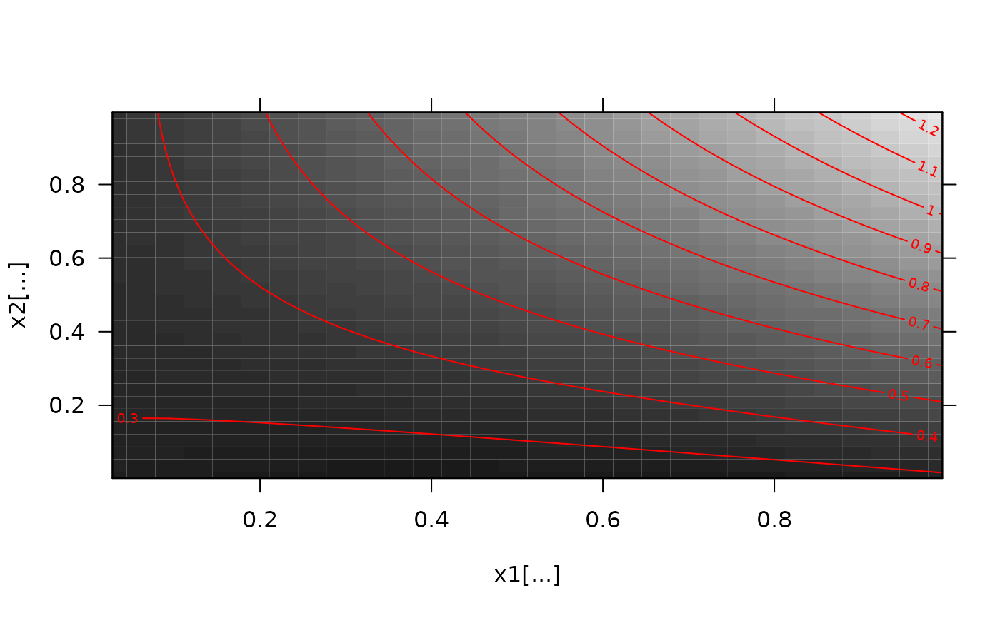
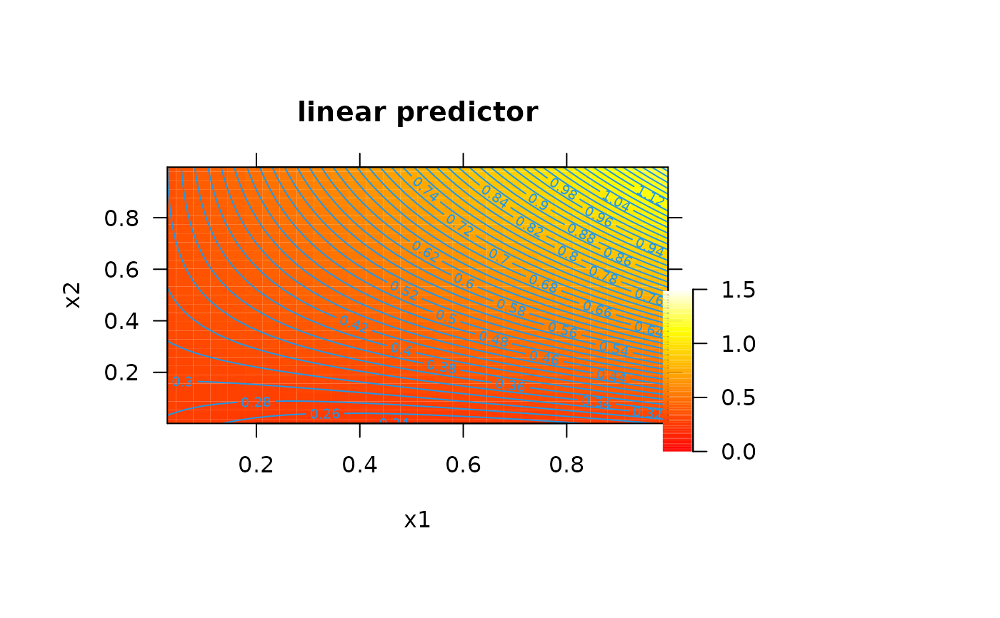
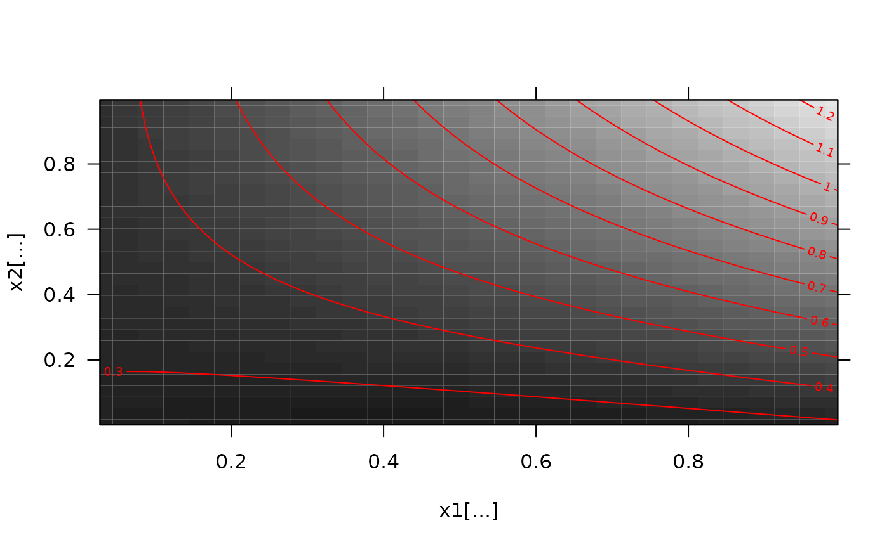
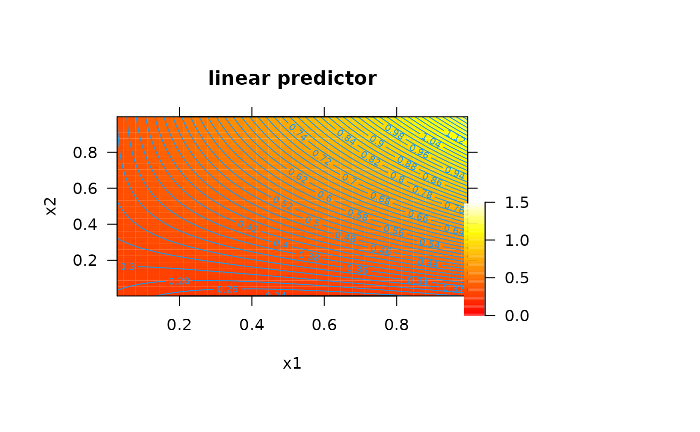

This is function plots pretty two-dimensional smooths as a contour plot.
Arguments
- x
An mgcv model (see
vis.gam).- view
A character vector of two variables (see
vis.gam).- xlim, ylim, pretty_axis_args
Axis control arguments.
xlimandylimcontrol x and y axis limits viapretty_axis. If not supplied,xlimandylimare defined as the range across each corresponding variable. To use default 'pretty' limits instead, specifyxlim = NULLandylim = NULL. Additional axis customisation is implemented by passing a named list of arguments topretty_axisviapretty_axis_args.- add_xy
A named list of arguments, passed to
points, to add observations to the plot.add_xy = NULLsuppresses this option,add_xy = list()implements default arguments and a named list customises these.- add_rug_x, add_rug_y
Named list of arguments, passed to
rug, to add observed values of the variables defined inviewto the plot.add_rug_* = NULLsuppresses this option,add_rug_*implements default arguments and a named list customises these.- return_list
(depreciated) A logical input which defines whether or not to return the list produced by
pretty_axis.- ...
Additional arguments passed to
vis.gam, excluding"plot.type"(since only contour plots are supported by this function) and"axes".
Value
The function returns a contour plot of the predictions of a generalised addition model for the two variables defined in view and, invisibly, the list of pretty axis parameters produced by pretty_axis.
Details
At present, the function is simply a wrapper for vis.gam with the additional flexibility provided by the pretty_axis function and the add_xy, add_rug_x and add_rug_y arguments.
Examples
#### Simulate example data and fit model (following ?mgcv::vis.gam examples)
set.seed(0)
n <- 200
sig2 <- 4
x0 <- runif(n, 0, 1)
x1 <- runif(n, 0, 1)
x2 <- runif(n, 0, 1)
y <- x0^2 + x1 * x2 + runif(n, -0.3, 0.3)
g <- mgcv::gam(y ~ s(x0, x1, x2))
#### Example (1): Contour plot using default options
pretty_smooth_2d(g, view = c("x1", "x2"))
#### Example (2): Customise axes via xlim, ylim and pretty_axis_args
# Use xlim and ylim
pretty_smooth_2d(g, view = c("x1", "x2"),
xlim = c(0, 1),
ylim = c(0, 1))
# Use pretty_axis_args
pretty_smooth_2d(g, view = c("x1", "x2"),
pretty_axis_args = list(side = 1:4))

#### Example (3): Add observed data
# Specify list() to use default options
pretty_smooth_2d(g, view = c("x1", "x2"),
add_xy = list())

# Customise addition of observed data
pretty_smooth_2d(g, view = c("x1", "x2"),
add_xy = list(pch = ".'", cex = 5))
#### Example (4): Add rugs for the x and y variables
# Use default options
pretty_smooth_2d(g, view = c("x1", "x2"),
add_rug_x = list(),
add_rug_y = list())
# Customise options
pretty_smooth_2d(g, view = c("x1", "x2"),
add_rug_x = list(col = "grey"),
add_rug_y = list(col = "grey"))
 #### Example (5): Pass additional options to mgcv::vis.gam() via ...
pretty_smooth_2d(g, view = c("x1", "x2"),
main = "", xlab = "x1[...]", ylab = "x2[...]",
color = "gray",
contour.col = "red")

#### Example (5): Integrate with add_colour_bar()
# Define plotting window with space for legend
pp <- graphics::par(oma = c(2, 2, 2, 10))
# Define z-limits for plot and legend and associated colours
zlim <- c(0, 1.5)
n_col <- 100
col_param <- pretty_cols_brewer(zlim = zlim,
pal = grDevices::heat.colors,
n_breaks = n_col + 1)
# Make plot with colour scheme
pretty_smooth_2d(g, view = c("x1", "x2"),
zlim = col_param$zlim,
col = "heat",
nCol = n_col,
nlevels = n_col)
#> Warning: "nlevels" is not a graphical parameter
#> Warning: "nlevels" is not a graphical parameter
#> Warning: "nlevels" is not a graphical parameter
# Define legend param required for add_colour_bar()
legend_at <-
data.frame(x = col_param$breaks[1:(length(col_param$breaks) - 1)],
col = col_param$col)
legend_axis <- pretty_axis(side = 4, x = list(legend_at$x))
# Add legend as subplot
TeachingDemos::subplot(add_colour_bar(legend_at,
pretty_axis_args = legend_axis),
x = 1, y = 0.05,
vadj = 0, hadj = 0,
size = c(0.2, 2))

#### Example (5): Pass additional options to mgcv::vis.gam() via ...
pretty_smooth_2d(g, view = c("x1", "x2"),
main = "", xlab = "x1[...]", ylab = "x2[...]",
color = "gray",
contour.col = "red")

#### Example (5): Integrate with add_colour_bar()
# Define plotting window with space for legend
pp <- graphics::par(oma = c(2, 2, 2, 10))
# Define z-limits for plot and legend and associated colours
zlim <- c(0, 1.5)
n_col <- 100
col_param <- pretty_cols_brewer(zlim = zlim,
pal = grDevices::heat.colors,
n_breaks = n_col + 1)
# Make plot with colour scheme
pretty_smooth_2d(g, view = c("x1", "x2"),
zlim = col_param$zlim,
col = "heat",
nCol = n_col,
nlevels = n_col)
#> Warning: "nlevels" is not a graphical parameter
#> Warning: "nlevels" is not a graphical parameter
#> Warning: "nlevels" is not a graphical parameter
# Define legend param required for add_colour_bar()
legend_at <-
data.frame(x = col_param$breaks[1:(length(col_param$breaks) - 1)],
col = col_param$col)
legend_axis <- pretty_axis(side = 4, x = list(legend_at$x))
# Add legend as subplot
TeachingDemos::subplot(add_colour_bar(legend_at,
pretty_axis_args = legend_axis),
x = 1, y = 0.05,
vadj = 0, hadj = 0,
size = c(0.2, 2))
